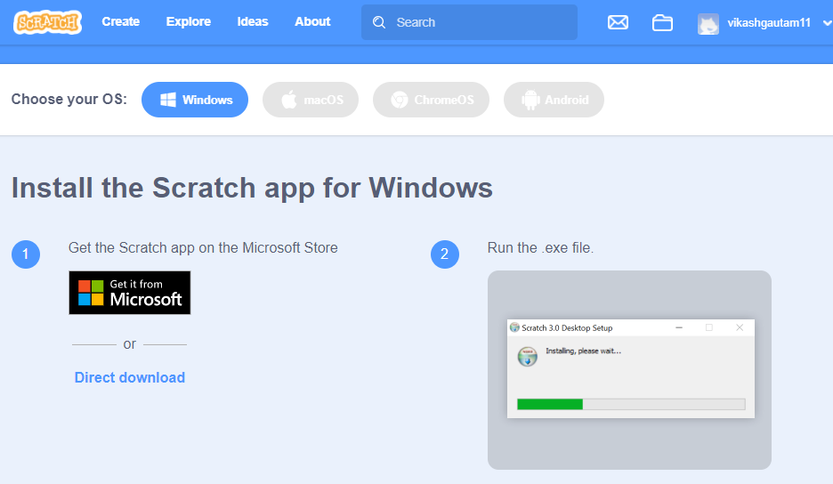
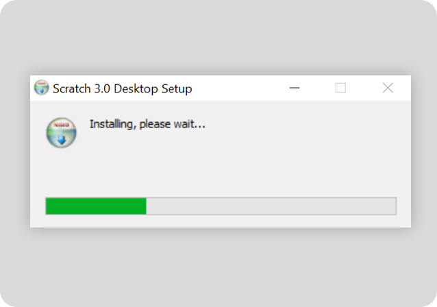

Scratch is an event-driven visual programming language developed by MIT. In Scratch, we can create our own interactive stories, games, and animations using building blocks. In this platform, we do not need to write code to perform operations, things are done just by drag and drop, just like visual basic. It is the best platform to start basic programming by creating attractive animation effects. There are so many features available in Scratch, such as video games, animations, stories, sound, events, etc. It is a free platform created by the Lifelong Kindergarten group at MIT in the Media lab. It is developed in ActionScript and JavaScript and is compatible with any operating system. It has been translated into more than 70 languages and used in most parts of the world.
Uses of Scratch: Scratch is made to learn basics programming concepts with fun. It is a tool for creating interesting games, stories, and more block-based programming. It has its own paint editor and sound builder. Anyone can start learning programming from Scratch even they do not have previous knowledge about programming languages and programming concepts.
There are the following four main elements of Scratch and they are:
It contains all the essential tools which are required to program a sprite to do or say something. Every element of a program, such as a loop, condition available in the programming palette.
It contains puzzle-piece shapes that are used to create code in Scratch. These blocks are connected to each other vertically like puzzle pieces. Every block has its own shape that prevents syntax errors. Once these blocks are connected, they are called scripts. These are the following six different shapes available in Scratch: Hat, Stack, Boolean, Reporter, C, and Cap.
This is a place where everything takes place, such as animations, turtle graphics either in a small or normal size, with a full-screen option also available. It uses X and Y coordinates to monitor action with 0, 0 being the stage center. All the action by a sprite is performed here.
These are the main characters of the program. It is a graphical element that is programmed using a programming palette. All the action is performed on the sprites. By default, with a cat avatar display on the sprite panel, users can also draw their own sprite.
In the script, everything defines what kind of operation should be done by sprites. It tells the characters what to do or say. Every single sprite is programmed with a scrip.
To download Scratch in your system follow the following steps:
Step 1: Open this link scratch.mit.edu/ in your browser and select your operating system. In this example, we will download Scratch in Windows 10.
Note: Offline Scratch application available in Windows, macOS, Android, and Chrome OS.
Step 2: After the selection of the operating system scroll down and select a downloading option. It is also available on Microsoft Store. Select direct download and downloading will be started.
Step 3: Once downloading will be done double click on the downloaded executable file (.exe) as shown in the image below, double-click.
Once the installation process is done search scratch in your application list and opens it.